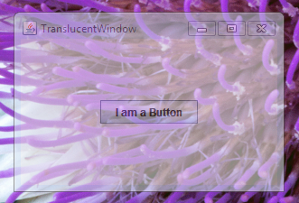
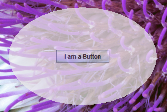

Lección: Usando Otras Características de Swing
Cómo crear Ventanas Translúcidas y con Formas
A partir de la versión 10 de la Plataforma Java, Edición Estándar 6 (Java SE 6), puede agregar ventanas translúcidas y con forma a sus aplicaciones Swing. Esta página cubre los siguientes temas:
- Capacidades Admitidas
- Determinación de las Capacidades de una Plataforma
- Cómo Implementar una Translucidez Uniforme
- Cómo Implementar Translucidez Por-Pixel
- Cómo Implementar una Ventana Con Forma
- La IPA de Java Versión 6 Actualización 10
- Para Más Información
Capacidades Admitidas
Esta funcionalidad, la cual es parte del paquete público AWT en el KDJ versión 7, toma tres formas, como siguen:
-
Puede crear una ventana con una translucidez uniforme, donde cada pixel tiene el mismo valor de
translucidez (o alfa). La siguiente captura de pantalla muestra una ventana con el 45 por ciento de
translucidez.

Pruebe esto:Pulse el botón Lanzar para ejecutar el ejemplo TranslucentWindowDemo usando Java™ Web Start. Este ejemplo requiere KDJ 7 o posterior. Alternativamente, para compilar y ejecutar el ejemplo usted mismo, consulte el índice de ejemplos.

-
Puede crear una ventana con translucided por-pixel, donde cada pixel tiene su propio valor alfa.
Con esta característica puede, por ejemplo, crear una ventana que se desvanece a nada definiendo un
degradado en los valores alfa. La siguiente captura de pantalla muestra una ventana con un gradiente de
translucidez desde la parte superior (completamente translúcida) a la parte inferior (completamente opaca).

Pruebe esto:Pulse el botón Lanzar para ejecutar el ejemplo GradientTranslucentWindowDemo usando Java™ Web Start. Este ejemplo requiere KDJ 7 o posterior. Alternativamente, para compilar y ejecutar el ejemplo usted mismo, consulte el índice de ejemplos.
-
Puede crear una ventana con cualquier objeto
Shapeque pueda definir. Las ventanas con forma pueden ser opacas, o pueden usar translucidez uniforme, o por-pixel. La siguiente captura de pantalla muestra una ventana de forma ovalda con el 30 por ciento de translucidez.
Pruebe esto:Pulse el botón Lanzar para ejecutar el ejemplo ShapedWindowDemo usando Java™ Web Start. Este ejemplo requiere KDJ 7 o posterior. Alternativamente, para compilar y ejecutar el ejemplo usted mismo, consulte el índice de ejemplos.
Determinación de las Capacidades de una Plataforma
No todas las plataformas admiten todas estas capacidades.Una excepciónUnsupportedOperationException
se lanza cuando el código intenta invocar los métodos setShape o setOpacity en una
plataforma que no admite estas capacidades. Por lo tanto, es una buena práctica comprobar primero que la
plataforma admita la capacidad que quiere implementar. La clase GraphicsDevice suministra el método
isWindowTranslucencySupported(GraphicsDevice.WindowTranslucency) que puede usar para este
propósito. Pase uno de los tres valores enumerados, definidos en
GraphicsDevice.WindowTranslucency, a este método:
-
TRANSLUCENT– La plataforma subyacente admite ventanas con translucidez uniforme, donde cada píxel tiene el mismo valor alfa. -
PERPIXEL_TRANSLUCENT– La plataforma subyacente admite ventanas con translucidez por píxel. Esta capacidad es necesaria para implementar ventanas que se desvanezcan. -
PERPIXEL_TRANSPARENT– La plataforma subyacente admite ventanas con formas.
GraphicsConfiguration también suministra el método
isTranslucencyCapable
para determinar si la translucidez PERPIXEL_TRANSLUCENT es soportada por el objeto
GraphicsConfiguration.
Nota de versión:
La IPA de ventanas con forma y translúcidas fue añadida primero a la versión 10 de la actualización de Java SE 6 como una IPA privada. Esta funcionalidad fue movida al paquete público de AWT en la versión 7 del KDJ (Kit de Desarrollo de Java, JDK en inglés). Este tutorial describe la IPA que está disponible en la versión del KDJ 7. Vea IPA de la Actualización 10 de Java SE 6 para un mapeo de la IPA privada en el lanzamiento de Java SE 6 Update 10 a la IPA pública en la versión KDJ 7.
import static java.awt.GraphicsDevice.WindowTranslucency.*;
// Determina si GraphicsDevice por defecto puede soportar.
GraphicsEnvironment ge =
GraphicsEnvironment.getLocalGraphicsEnvironment();
GraphicsDevice gd = ge.getDefaultScreenDevice();
boolean isUniformTranslucencySupported =
gd.isWindowTranslucencySupported(TRANSLUCENT);
boolean isPerPixelTranslucencySupported =
gd.isWindowTranslucencySupported(PERPIXEL_TRANSLUCENT);
boolean isShapedWindowSupported =
gd.isWindowTranslucencySupported(PERPIXEL_TRANSPARENT);
Nota:
Ninguna de estas capacidades funciona en ventanas en modo de pantalla completa. Invocar cualquiera de los
métodos relevantes mientras se está en modo de pantalla completa causa que sea lanzada una excepción
IllegalComponentStateException.
Cómo Implementar una Translucidez Uniforme
Puede crear una ventana donde cada pixel tenga la misma translucidez invocando el métodosetOpacity(float) en la clase Window. El argumento float pasado a
este método representa la translucidez de la ventana y debe ser un valor entre 0 y 1, inclusive. Cuanto más
pequeño el número, más transparente es la ventana. Hay también un método
getOpacity
correspondiente.
El ejemplo
TranslucentWindowDemo.java crea una ventana que es el 55 por ciento
opaca (el 45 por ciento es translúcido). Si la plataforma subyacente no soporta ventanas
translucidas, el ejemplo termina. El código relativo a la opacidad es mostrado debajo en negrita.
import java.awt.*;
import javax.swing.*;
import static java.awt.GraphicsDevice.WindowTranslucency.*;
public class TranslucentWindowDemo extends JFrame {
public TranslucentWindowDemo() {
super("TranslucentWindow");
setLayout(new GridBagLayout());
setSize(300,200);
setLocationRelativeTo(null);
setDefaultCloseOperation(JFrame.EXIT_ON_CLOSE);
//Agrega un botón de ejemplo.
add(new JButton("Soy un Botón"));
}
public static void main(String[] args) {
// Determina si GraphicsDevice soporta la translucidez.
GraphicsEnvironment ge =
GraphicsEnvironment.getLocalGraphicsEnvironment();
GraphicsDevice gd = ge.getDefaultScreenDevice();
//Si las ventanas translúcidas no son soportadas, salimos.
if (!gd.isWindowTranslucencySupported(TRANSLUCENT)) {
System.err.println(
"La translucidez no es compatible");
System.exit(0);
}
JFrame.setDefaultLookAndFeelDecorated(true);
// Crea un IGU en el hilo despachador de eventos
SwingUtilities.invokeLater(new Runnable() {
@Override
public void run() {
TranslucentWindowDemo tw = new TranslucentWindowDemo();
// Establece la ventana a una opacidad del 55%(45% translucidez).
tw.setOpacity(0.55f);
// Muestra la ventana.
tw.setVisible(true);
}
});
}
}
Note que el botón es también afectado por la translucidez uniforme. Establecer la opacidad afecta a la ventana entera, incluyendo cualquier componente que la ventana contiene.
Cómo Implementar Translucidez Por-Pixel
Crear una ventana que use la transparencia por pixel implica la definición de valores alfa sobre el área rectangular que ocupa la ventana. Cuando el valor alfa de un pixel es 0, ese pixel es completamente transparente. Cuando el valor alfa de un pixel es 255, ese pixel es completamente opaco. Cuando el valor alfa de un pixel es 128, ese pixel tiene un 50 por cierto de translucidez, y así. Una forma fácil de crear una interpolación suave entre valores alfa es usar la claseGradientPaint. El
ejemplo incluido usa este enfoque.
Invocar
setBackground(new Color(0,0,0,0)) sobre la ventana causa a que el software use los valores
alfa para renderizar la translucidez por pixel. En realidad, invocar
setBackground(new Color(0,0,0,alpha), donde alpha es menor que 255, instala la
transpariencia por pixel. Así, si usted invoca
setBackground(new Color(0,0,0,128)) y nada más, la ventana es renderizada con el 50 por ciento de
translucidez para cada pixel del fondo. Sin embargo, si está creando su propio rango de valores alfa, lo más
probable es que desee un valor alfa de 0.
Mientras no está prohibido por la IPA pública, generalmente querrá habilitar la translucidez por píxel en ventanas sin decoración. En la mayoría de los casos, usar translucidez por pixel en ventanas decoradas no tiene sentido. Hacer eso puede deshabilitar las decoraciones, o causar otros efectos laterales dependientes de la plataforma.
Para determinar si una ventana está usando translucidez por pixel, puede usar el método
isOpaque
Un ejemplo sigue. Primero, aquí están los pasos requeridos para implementar el ejemplo:
-
Invoque
setBackground(new Color(0,0,0,0))sobre la ventana. -
Cree una instancia de
JPanelque sobreescriba el métodopaintComponent. -
En el método
paintComponent, cree una instancia deGradientPaint. -
En el ejemplo, la parte superior del rectángulo tiene un valor alfa de 0 (el más transparente) y la parte
inferior tiene un valor alfa de 255 (el más opaco). La clase
GradientPaintinterpola suavemente los valores alfa desde la parte superior hasta la parte inferior del rectángulo. -
Establezca la instancia
GradientPaintcomo el método de pintado del panel.
Aquí está el código para el ejemplo
GradientTranslucentWindowDemo.java
. Si la plataforma subyacente no soporta translucidez por pixel, este ejemplo se sale. El código
específicamente relacionado a la creación del gradiente de la ventana es mostrado en negrita.
import java.awt.*;
import javax.swing.*;
import static java.awt.GraphicsDevice.WindowTranslucency.*;
public class GradientTranslucentWindowDemo extends JFrame {
public GradientTranslucentWindowDemo() {
super("GradientTranslucentWindow");
setBackground(new Color(0,0,0,0));
setSize(new Dimension(300,200));
setLocationRelativeTo(null);
setDefaultCloseOperation(JFrame.EXIT_ON_CLOSE);
JPanel panel = new JPanel() {
@Override
protected void paintComponent(Graphics g) {
if (g instanceof Graphics2D) {
final int R = 240;
final int G = 240;
final int B = 240;
Paint p =
new GradientPaint(0.0f, 0.0f, new Color(R, G, B, 0),
0.0f, getHeight(), new Color(R, G, B, 255), true);
Graphics2D g2d = (Graphics2D)g;
g2d.setPaint(p);
g2d.fillRect(0, 0, getWidth(), getHeight());
}
}
};
setContentPane(panel);
setLayout(new GridBagLayout());
add(new JButton("Soy un Botón"));
}
public static void main(String[] args) {
// Determina si GraphicsDevice puede soportar.
GraphicsEnvironment ge =
GraphicsEnvironment.getLocalGraphicsEnvironment();
GraphicsDevice gd = ge.getDefaultScreenDevice();
boolean isPerPixelTranslucencySupported =
gd.isWindowTranslucencySupported(PERPIXEL_TRANSLUCENT);
//Si las ventanas translucidas no son soportadas, salimos.
if (!isPerPixelTranslucencySupported) {
System.out.println(
"La translucidez por píxel no es compatible");
System.exit(0);
}
JFrame.setDefaultLookAndFeelDecorated(true);
// Crea el IGU en el hilo despachador de eventos
SwingUtilities.invokeLater(new Runnable() {
@Override
public void run() {
GradientTranslucentWindowDemo gtw = new
GradientTranslucentWindowDemo();
// Muestra la ventana.
gtw.setVisible(true);
}
});
}
}
Note que el botón no está afectado por la translucidez por pixel. Establecer la translucidez por pixel afecta
a los píxeles del fondo sólo. Si quiere una ventana que tenga un efecto uniformemente translucido sólo en los
píxeles del fondo, puede invocar setBackground(new Color(0,0,0,alpha)) donde alpha
especifica su translucidez deseada.
Cómo Implementar una Ventana Con Forma
Puede crear una ventana con forma invocando el métodosetShape(Shape) en la clase Window. El argumento Shape que es pasado
al método determina cómo se recorta la ventana. Cuando una forma es establecida en una ventana, las
decoraciones de la ventana no se vuelven a formar con la nueva forma, por lo que la configuración de una forma
funciona mejor en las ventanas sin decoración.
La mejor práctica para establecer la forma de la ventana es invocar setShape en el método
componentResized del oyente de evento del componente. Esta práctica se asegurará de que la forma
es correctamente calculada para el tamaña actual de la ventana. El ejemplo siguiente usa este enfoque.
El ejemplo
ShapedWindowDemo.java crea una ventana de forma ovalada con el 70
por ciento de opacidad. Si la plataforma subyacente no soporta ventanas con forma, el ejemplo
termina. Si la platafora subyaciente no soporta la translucidez, el ejemplo usa una ventana opaca
estándar. Podría modificar este ejemplo para crear una ventana con forma que también use
translucidez por pixel.
El código relativo con la configuración de la ventana se muestra en negrita.
import java.awt.*;
import java.awt.event.*;
import javax.swing.*;
import java.awt.geom.Ellipse2D;
import static java.awt.GraphicsDevice.WindowTranslucency.*;
public class ShapedWindowDemo extends JFrame {
public ShapedWindowDemo() {
super("ShapedWindow");
setLayout(new GridBagLayout());
// Es una buena práctica establecer la forma de la ventana en
// el método componentResized. Entonces, si la ventana
// cambia el tamaño, la forma será recalculada correctamente.
addComponentListener(new ComponentAdapter() {
// Da a la venta una forma elíptica.
// Si la ventana es redimensionada, la forma es recalculada aquí.
@Override
public void componentResized(ComponentEvent e) {
setShape(new Ellipse2D.Double(0,0,getWidth(),getHeight()));
}
});
setUndecorated(true);
setSize(300,200);
setLocationRelativeTo(null);
setDefaultCloseOperation(JFrame.EXIT_ON_CLOSE);
add(new JButton("Soy un Botón"));
}
public static void main(String[] args) {
// Determine what the GraphicsDevice can support.
GraphicsEnvironment ge =
GraphicsEnvironment.getLocalGraphicsEnvironment();
GraphicsDevice gd = ge.getDefaultScreenDevice();
final boolean isTranslucencySupported =
gd.isWindowTranslucencySupported(TRANSLUCENT);
//If shaped windows aren't supported, exit.
if (!gd.isWindowTranslucencySupported(PERPIXEL_TRANSPARENT)) {
System.err.println("Las ventanas con forma no están admitidas");
System.exit(0);
}
//Si las ventanas translúcidas no son admitidas,
//crea una ventana opaca.
if (!isTranslucencySupported) {
System.out.println(
"La translucidez no es soportada, creando una ventana opaca");
}
// Crea la IGU en el hilo despachador de eventos
SwingUtilities.invokeLater(new Runnable() {
@Override
public void run() {
ShapedWindowDemo sw = new ShapedWindowDemo();
// Establece la ventana al 70% de translucidez , si lo soporta.
if (isTranslucencySupported) {
sw.setOpacity(0.7f);
}
// Muestra la ventana.
sw.setVisible(true);
}
});
}
}
La IPA de Java Versión 6 Actualización 10
Cambiar la IPA pública en una versión de actualización no está permitido, así que cuando la capacidad de ventanas con forma y translucidad fue añadida a la versión 10 de la actualización 6 de Java SE, fue implementada en la clase privadacom.sun.awt.AWTUtilities. Para la versión del KDJ 7, esta funcionalidad fue modvida al
paquete público de AWT. La siguiente tabla muestra cómo los métodos privados se asignan con los métodos públicos.
| Método en la Actualización 10 de Java SE 6 | Equivalente en KDJ 7 |
|---|---|
AWTUtilities.isTranslucencySupported(Translucency) |
GraphicsDevice.isWindowTranslucencySupported(WindowTranslucency)
|
AWTUtilities.isTranslucencyCapable(GraphicsConfiguration) |
GraphicsConfiguration.isTranslucencyCapable() |
AWTUtilities.setWindowOpacity(Window, float) |
Window.setOpacity(float) |
AWTUtilities.setWindowShape(Window, Shape) |
Window.setShape(Shape) |
AWTUtilities.setWindowOpaque(boolean) |
Window.setBackground(Color) Pasar new Color(0,0,0,alpha) a este método,
donde alpha es menor que 255, instala la translucidez por pixel.
|
Para Más Información
- El artículo Cómo crear Ventanas Translúcidas y con Formas describe la IPA de la actualización 10 de Java SE 6.
- El artículo Ventanas de Swing translúcidas y con forma describe la IPA de la Actualización 10 de Java SE 6.
- La entrada de bitácora de Romain Guy Criatura Curiosa muestra una demostración con una aplicación de ventana con forma y translucida.